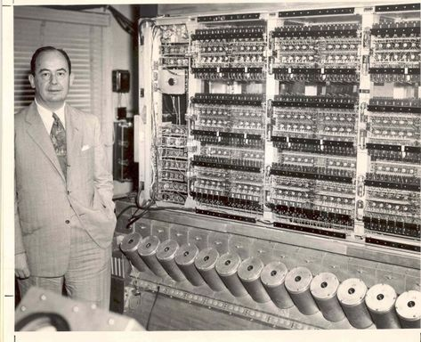
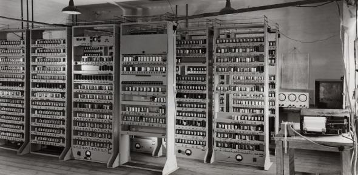
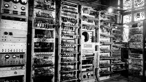

b)J.V.Neumann: He was the mathematician. He discovered stored program technology in 1945 AD. This became the fundumental program technology for the modern digital computer. This techinque mad ecomputer programming and computing faster, more fexible and mpre efficient. The key element to the Von Neumann architecture was the central processing unit, which allowed all computer functions to be coordinated through a single source. He was regarded as "father of stored program"

c)EDSAC:The Electronic Delay Storage Automatic Calculator (EDSAC) was an early British computer.[1] Inspired by John von Neumann's seminal First Draft of a Report on the EDVAC, the machine was constructed by Maurice Wilkes and his team at the University of Cambridge Mathematical Laboratory in England. EDSAC was the second electronic digital stored-program computer to go into regular service.Later the project was supported by J. Lyons & Co. Ltd., intending to develop a commercially applied computer and succeeding in Lyons' development of LEO I, based on the EDSAC design. Work on EDSAC started during 1947, and it ran its first programs on 6 May 1949, when it calculated a table of square numbers and a list of prime numbers. EDSAC was finally shut down on 11 July 1958, having been superseded by EDSAC 2, which remained in use until 1965.

d)EDVAC:EDVAC (Electronic Discrete Variable Automatic Computer) was one of the earliest electronic computers. It was built by Moore School of Electrical Engineering, Pennsylvania. 626–628 Along with ORDVAC, it was a successor to the ENIAC. Unlike ENIAC, it was binary rather than decimal, and was designed to be a stored-program computer.ENIAC inventors, John Mauchly and J. Presper Eckert, proposed the EDVAC's construction in August 1944. A contract to build the new computer was signed in April 1946 with an initial budget of US$100,000. EDVAC was delivered to the Ballistic Research Laboratory in 1949. The Ballistic Research Laboratory became a part of the US Army Research Laboratory in 1952.Functionally, EDVAC was a binary serial computer with automatic addition, subtraction, multiplication, programmed division and automatic checking with an ultrasonic serial memory having a capacity of 1,024 44-bit words. EDVAC's average addition time was 864 microseconds and its average multiplication time was 2,900 microseconds.

e)UNIVAC: UNIVAC stands for "UNIVersal Automatic Computer". It was the first general purpose electronic digital computer made for business and administrative use (that is for the fast execution of large numbers of relativety simple arithmetic and data transport operations, as opposed to the complex numerical requried by scientific computers). Befor it, mostly the computers were used for census or defense department. It was also made by J.W.Mauchly and J.P.Eckert in 1961 AD. It was 8 feet hugh, 15 feet long and weight was about 15 tons.